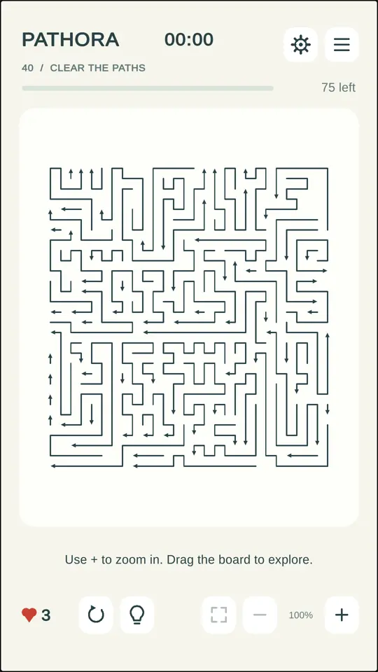
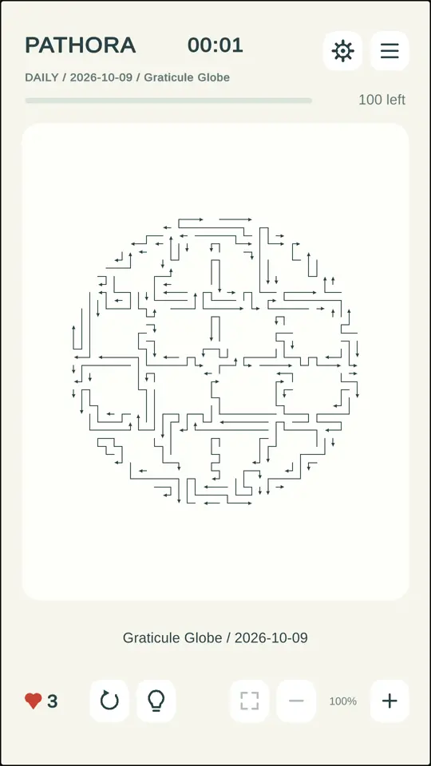
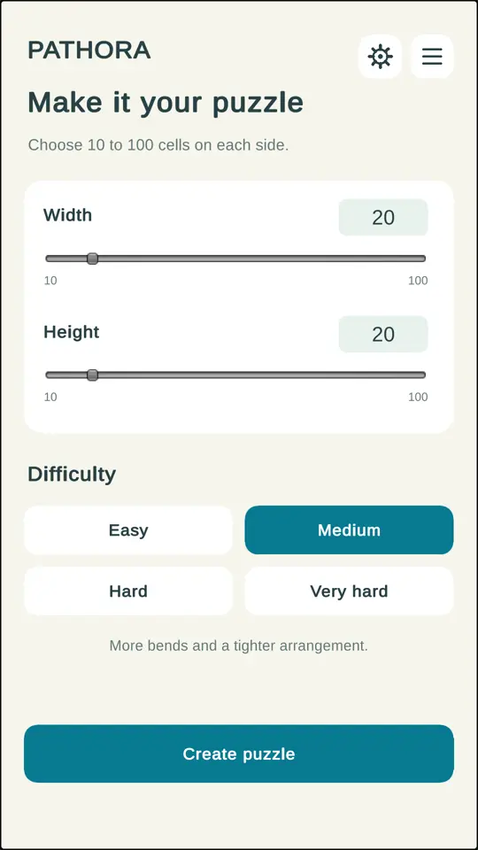

Follow the arrow
Find a path with nothing blocking its arrowhead. Tap anywhere along it to send it on its way.
A LITTLE SPACE TO THINK
A tangle of arrows. A moment of focus.
Clear the board, one thoughtful move at a time.
No rush. No account. Just the next clear path.

THE IDEA IS SIMPLE
The fun is finding the right order.
Find a path with nothing blocking its arrowhead. Tap anywhere along it to send it on its way.
One move makes space for another. Plan ahead, zoom in, and use a hint when you need a fresh perspective.
Remove every arrow to finish. Then take on the next puzzle — or save your place and come back later.
YOUR NEXT LITTLE CHALLENGE
From your first clear path to a board
you can truly get lost in.
Start simple. Discover denser, more intricate puzzles as you progress through the stages.
A gentle start. A growing challenge.
Find a new shape each day and revisit past challenges through the calendar.
Unlocks after completing stage 20.
Create a fresh puzzle with four difficulty levels and board sizes from 10 × 10 to 100 × 100.
Unlocks after completing stage 100.MAKE YOURSELF COMFORTABLE
Pick up where you paused. Saved stages and Free Play puzzles keep your place.
Look a little closer. Pinch to zoom, move around the board, or fit the whole puzzle into view.
Keep it calm. Control sound effects, vibration and reduced motion in Settings.
THE FIRST CHAPTER
Pathora is currently in internal testing on Google Play.
Invited testers can join using the testing link shared with them.
Public availability will be announced here.
GOOD TO KNOW
Yes. The current Android game generates its stages and daily puzzles locally. You do not need an internet connection to play after installation.
No account is needed inside Pathora. Your progress and preferences are saved on your device.
Continue stages returns you to your unfinished campaign stage. Free Play has a separate saved puzzle that you can resume from its settings screen.
Email pathora@afsanora.com. For technical issues, your device model, Android version and a description of what happened can help us investigate. Please avoid sending sensitive personal information.